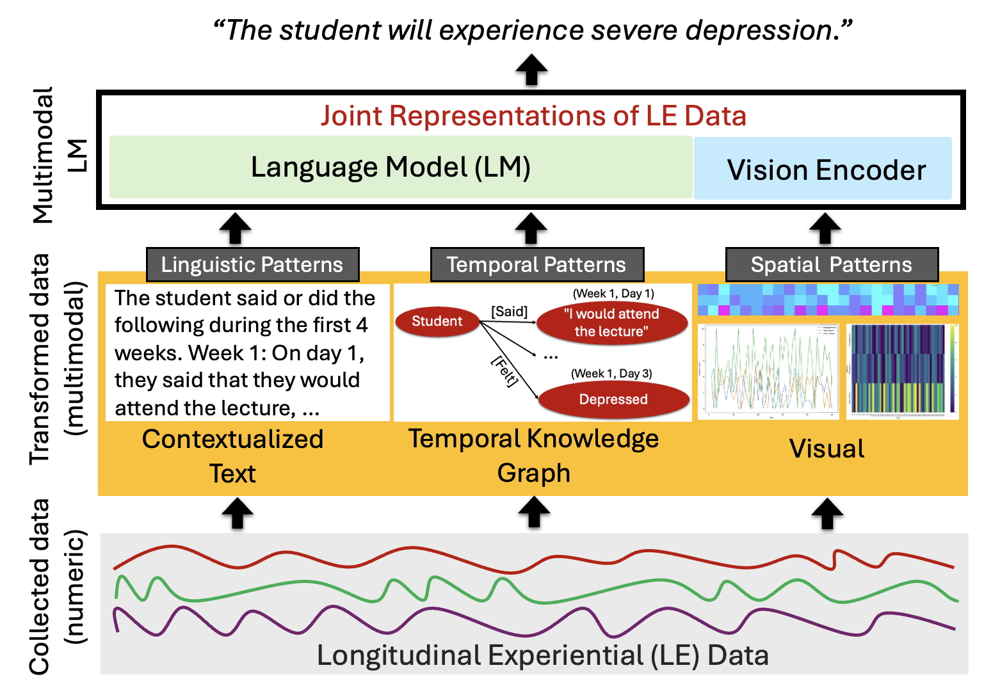

Research at Human-First Artificial Intelligence Lab (HAL 2.0)
A Multimodal AI Approach to Modeling Human Behavior From Longitudinal Experiential Data
This research pioneers a transformative AI framework to unlock the potential of longitudinal experiential (LE) data, which captures intricate patterns of human behavior across time. Understanding how individuals' experiences evolve is crucial in fields like education and healthcare, but LE data is often messy, incomplete, and multimodal, posing challenges for traditional AI methods. Through the NSF-funded "Messages From A Future You" (MFAFY) system, we have demonstrated how large language models (LLMs) can process noisy, sparse, and heterogeneous data to deliver personalized educational interventions—such as customized feedback based on students’ unique learning patterns—that outperform traditional numeric-feature-based machine learning and deep learning approaches.
Building on this success, we are developing a generalized multimodal LLM-based learning paradigm that captures complex relational structures in LE data across diverse domains. This foundational framework leverages complementary representations—converting LE sequences into structured textual narratives, designing visual heatmaps to reveal relational structures, and encoding temporal knowledge graphs—enabling AI systems to understand and predict human behavior despite missing or ambiguous information. By addressing fundamental challenges in multimodal integration and temporal dependency modeling, our research enhances AI's ability to process real-world human experiences with greater robustness and fidelity, creating systems that truly understand individuals' cognitive, emotional, and behavioral trajectories over time.
Broader Impacts
This research has far-reaching impacts, enhancing personalized education by improving student engagement and performance, advancing healthcare through early mental health diagnoses, and enabling adaptive AI assistants that model long-term user behavior. By making AI systems more robust and interpretable, our work paves the way for scalable, data-driven solutions that address real-world challenges in human-centric applications, embodying HAL 2.0's commitment to AI that truly serves human needs.
Publications
Student advisees are marked with an asterisk (*).
- Ahatsham Hayat*, Helen Martinez*, Bilal Khan, and Mohammad Rashedul Hasan, An Approach to Utilizing Large Language Models for Forecasting Student Engagement in STEM Education, The 2025 ASEE Annual Conference [accepted].
- Ahatsham Hayat* and Mohammad Rashedul Hasan, A Context-Aware Approach for Enhancing Data Imputation with Pre-trained Language Models, The 31st International Conference on Computational Linguistics (COLING 2025).
- Ahatsham Hayat*, Bilal Khan, and Mohammad Rashedul Hasan, Leveraging Language Models for Analyzing Experiential Time-Series Data in Education, The 2024 International Conference on Machine Learning and Applications (ICMLA), acceptance rate: 24.3%.
- Ahatsham Hayat*, Bilal Khan, and Mohammad Rashedul Hasan, Enhancing Transfer Learning for Early Forecasting of Academic Performance by Contextualizing Language Models, The 19th NAACL Workshop on Innovative Use of NLP for Building Educational Applications.
- Ahatsham Hayat*, Sharif Wayne Akil*, Helen Martinez*, Bilal Khan, and Mohammad Rashedul Hasan, Enhancing Zero-Shot Learning of Large Language Models for Early Forecasting of STEM Performance, The 2024 ASEE Annual Conference.
- Ahatsham Hayat* and Mohammad Rashedul Hasan, The Power of Personalization and Contextualization: Early Student Performance Forecasting with Language Models, The 2023 NeurIPS Workshop on Generative AI for Education (GAIED).
- Mohammad Rashedul Hasan and Bilal Khan, A Trajectory-Clustering Framework for Assessing AI-Based Adaptive Interventions in Undergraduate STEM Learning, The 2023 ASEE Annual Conference.
In the News
- September 2023 Our research on AI-driven personalized learning interventions was featured in the UNL Nebraska Today's "Pocket Science" series, highlighting how our MFAFY system is transforming educational outcomes for students.
- July 2022 Nebraska Today published an in-depth article highlighting our NSF-sponsored project "Messages From A Future You," showcasing how our lab's innovative approach to human-centered AI is revolutionizing personalized learning interventions.
Funding
- National Science Foundation
- Undergraduate Creative Activities and Research Experience (UCARE) fellowship, UNL
Collaborations
- Dr. Bilal Khan (College of Health, Department of Community and Population Health, Lehigh University)
- Dr. Neeta Kantamneni (Educational Psychology, UNL)